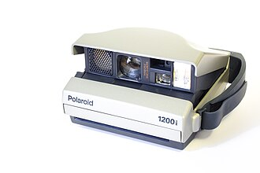

Polaroids, VHS cassettes, vinyl, and cathode ray tube (CRT) televisors - these are some of the electronic devices that were widespreadly used in the past and often were one of the components that created associations with the time period where their popularity was at its peak (such as a particular decade). Nowadays, it can often be seen and heard that retro devices like these have largely given way to more modern equivalents (such as televisors with flat-panel displays or smart phone cameras).
Nostalgia and anemoia, two in one
However, when searching for online articles about electronic devices from previous eras, I noticed several recent (and less recent) news articles about how they were starting to gain popularity again, and one of the most interesting things is the seemingly cross-generational nature of the retro revival - for people from older generations who had experienced using these devices before, such devices would of course have the value of nostalgia, but these retro devices also seem to be gaining popularity among some people from younger generations as well. Of course, it would be rash to assume that the same type of technology and devices were first phased out everywhere simultaneously - for example, in some countries computers with CRT monitors most likely retained their prevalence longer than in others (or even in different regions on the scale of one country). Likewise, the same could be applied for talks about retro tech or its resurgence, as the shifts to fuel these discussions might not have happened yet, not to mention that there could be differences in things like specific models and brands that are associated with retro nostalgia. Still, being able to witness retro tech devices in action (and not just look at them as objects of exposition) both gives an idea on how these devices operate and provides insights on cultural life from time periods that are becoming more distant with each passing year.